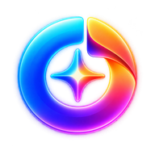
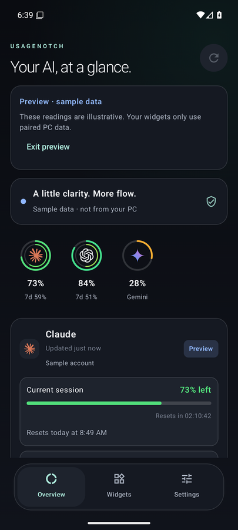
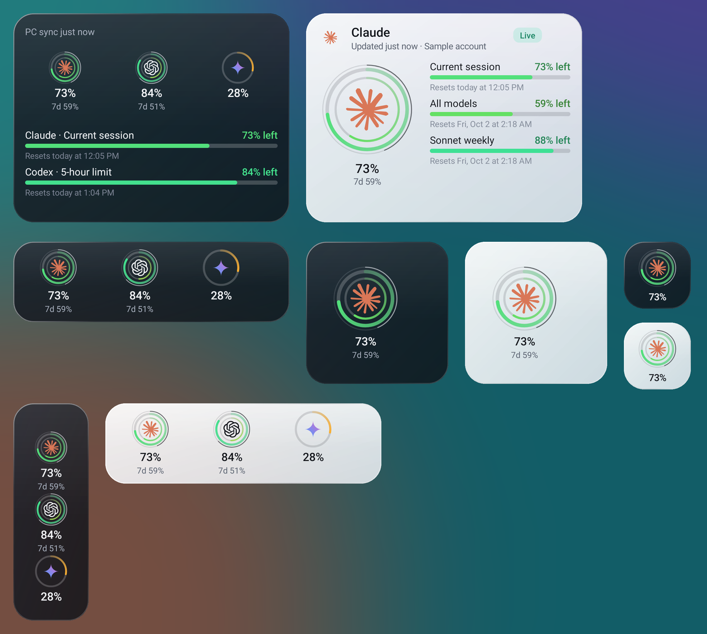

UsageNotch for Windows
A dock pinned to your screen edge with live rings, reset countdowns, alerts, full usage history and built-in phone sharing. No installer and no .NET needed.
Download UsageNotch.exe or the smaller ZIP
UsageNotchSee how much of your Claude, Codex, Gemini and Cursor limits you have left, and when they reset: on your Windows desktop, your phone and your home screen.

Start with the Windows app: it reads your limits from the accounts you're already signed in to. Add the Android app to carry them to your phone; the Windows app shares with it directly.
A dock pinned to your screen edge with live rings, reset countdowns, alerts, full usage history and built-in phone sharing. No installer and no .NET needed.
Download UsageNotch.exe or the smaller ZIPThe desktop dock in your pocket: the same rings and logos, widgets in any size, a live countdown, usage alerts, a Quick Settings tile, 30-day history and an offline mode. Open the APK on your phone to install it.
Download the APK SHA-256 checksumsOn your PC, open UsageNotch → Settings → Phone and turn on sharing. On your phone, tap Scan QR code. No extra app, no files to copy. Scanning with the phone's camera works too, even before the app is installed.
How to set up Still on Windows 2.2? Get UsageNotch LinkYou only need the phone steps if you want the Android app.
UsageNotch.exe. If SmartScreen appears, choose More info → Run anyway. Connect Claude, Codex, Gemini or Cursor in Settings.Resize freely: a single ring, a dock row or column like the desktop, or the full view with every limit. Rings use the desktop's colours and the real Claude, OpenAI, Gemini and Cursor marks.

Your sign-ins stay on Windows, so new usage is measured there. When the PC is off or you're away, the phone stays useful and never pretends.
The app and widgets keep your last readings, marked with their age, and count down to each reset. The status says PC offline, not an error.
When a reset time passes, the limit shows Renewed, and with Reset alerts on your phone notifies you. It needs no connection at all.
Windows can upload each reading to a secret gist in your own GitHub account, encrypted with a key only your paired phone has. Turning it on takes two clicks, and your phone switches over by itself on your Wi-Fi. Get readings on mobile data, and keep the last one after the PC shuts down.
No accounts, ads, analytics or tracking. AI sign-ins never leave Windows, and Wi-Fi pairing uses HTTPS pinned to your PC's own certificate.
UsageNotch isn't code-signed with a paid certificate yet, so SmartScreen doesn't recognize it. Choose More info → Run anyway. You can compare the download with the SHA-256 checksums published on each release.
Android asks you to allow installs from the app you downloaded it with, such as Chrome or Files. Allow it once, then open the APK again. Updates install over the existing app and keep your pairing.
In UsageNotch on Windows, open Settings → Phone, check sharing is on and your Wi-Fi address is selected (not vEthernet or WSL). Keep both devices on the same Wi-Fi or a private VPN such as Tailscale, and allow UsageNotch on Private networks in Windows Firewall.
Update UsageNotch for Windows to 2.3 or later (it updates itself), open Settings → Phone and choose Switch to built-in. Your phone stays paired: same key, same certificate. Link is closed and removed from startup.
Not new usage: only UsageNotch on Windows signs in to Claude, ChatGPT, Gemini and Cursor, and your credentials aren't copied to the phone. Saved readings, countdowns, Renewed states, history and reset alerts all work offline, and internet sync gives you the latest reading from anywhere.
Claude (Claude Code sign-in), Codex (ChatGPT sign-in), Cursor, Gemini Code Assist where Google still allows its CLI sign-in, and month-to-date API spend for OpenAI and Anthropic with Admin keys. Each provider's limits are shown separately.